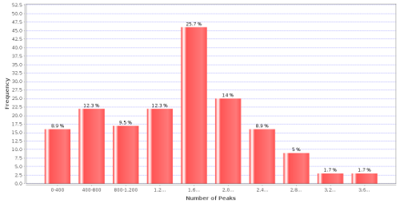

Explanation
A histogram representing the number of peaks per MS/MS spectrum in the whole experiment. This chart assumes centroid data. Too few peaks can identify poor fragmentation or a detector fault, as opposed to a large number of peaks representing very noisy spectra. This chart is extensively dependent on the pre-processing steps performed to the spectra (centroiding, deconvolution, peak picking approach…).
